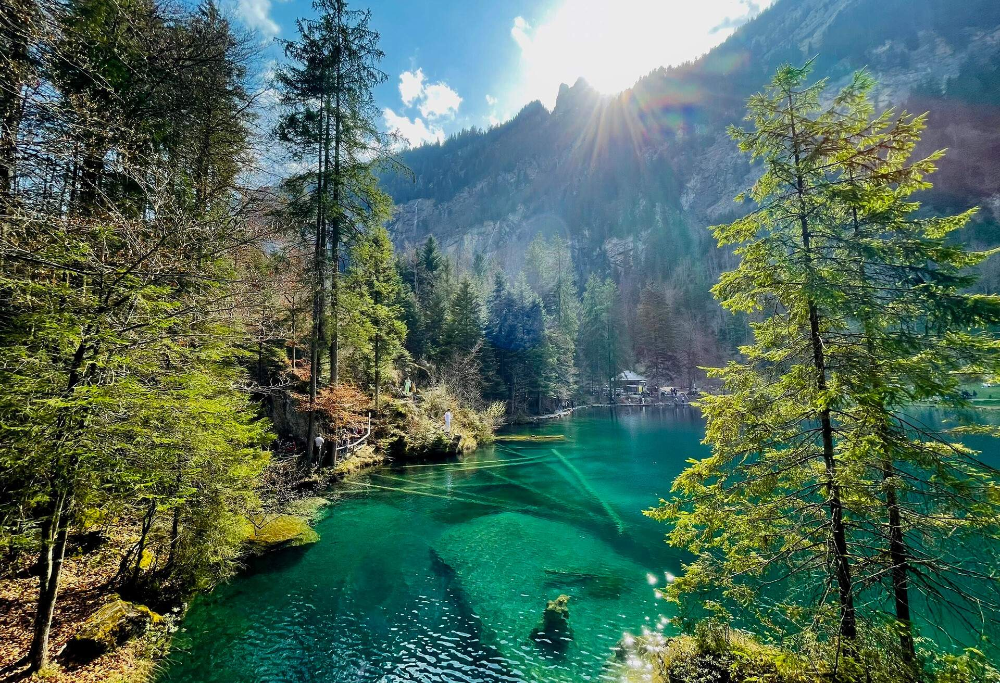

Swtizerland has around 7000 lakes. According to Studying in Switzerland most of the lakes in the country are safe to swim in. One thing though, if you can't see the bottom of the lake, it's considered dirty, and most likely not the best place to swim in.
Most lakes in Switzerland are actually safe to drink from, but you do need to watch out for any bacteria, algae, or water clearness.
